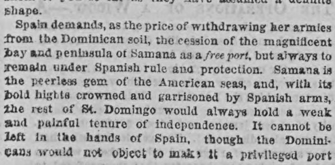
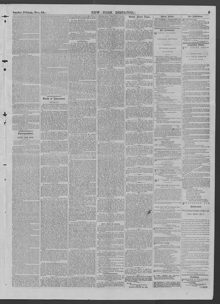

See the full pageVer la página completaIt cannot be left in he hands of Spain, though theNo puede quedar en manos de España, aunque el
The New York Dispatch reported that while the Dominican Republic cannot be left in the hands of Spain, Samana cannot be converted into an American center controlled by Spanish policy. Consequently, the Dominicans offered Manzanillo Bay as an absolutely free port, along with a neutral frontier belt alongside Hayti and the proposal for another free and neutral port on the south coast.El New York Dispatch expuso que, si bien la República Dominicana no puede permanecer en manos de España, Samaná no puede convertirse en un enclave estadounidense tutelado por la política española. Por consiguiente, los dominicanos ofrecieron la bahía de Manzanillo como puerto absolutamente franco, además de una franja fronteriza neutral lindante con Haití y la propuesta de habilitar otro puerto franco y neutral en la costa sur.
FULL TEXT:TRADUCCIÓN:
shape.forma.
Spain demands, as the price of withdrawing her armies from the Dominican soil, the cession of the magnificent bay and peninsula of Samana as a free port, but always to remain under Spanish rule and protection. Samana is the peerless gem of the American seas, and, with its bold hights crowned and garrisoned by Spanish arms, the rest of St. Domingo would always hold a weak and painful tenure of independence. It cannot be left in the hands of Spain, though the Dominicans would not object to make it a privileged portEspaña demanda, como el precio de retirar sus ejércitos del suelo dominicano, la cesión de la magnífica bahía y península de Samaná como un puerto libre, pero siempre para permanecer bajo el gobierno y protección españoles. Samaná es la gema sin par de los mares americanos, y, con sus alturas atrevidas coronadas y guarnecidas por armas españolas, el resto de Santo Domingo siempre tendría una tenencia débil y dolorosa de independencia. No puede ser dejada en manos de España, aunque los dominicanos no objetarían hacerla un puerto privilegiado
New York Dispatch. New York, December 18, 1864.
See the original at the Library of CongressVer el original en la Biblioteca del Congreso
Edition: Edition 1Edición: edición 1
Page: 5Página: 5
Collection: Chronicling America, Library of CongressColección: Chronicling America, de la Biblioteca del Congreso
LCCN: sn85026214LCCN: sn85026214
Rights: public domain, according to the Library of CongressDerechos: dominio público, según la Biblioteca del Congreso